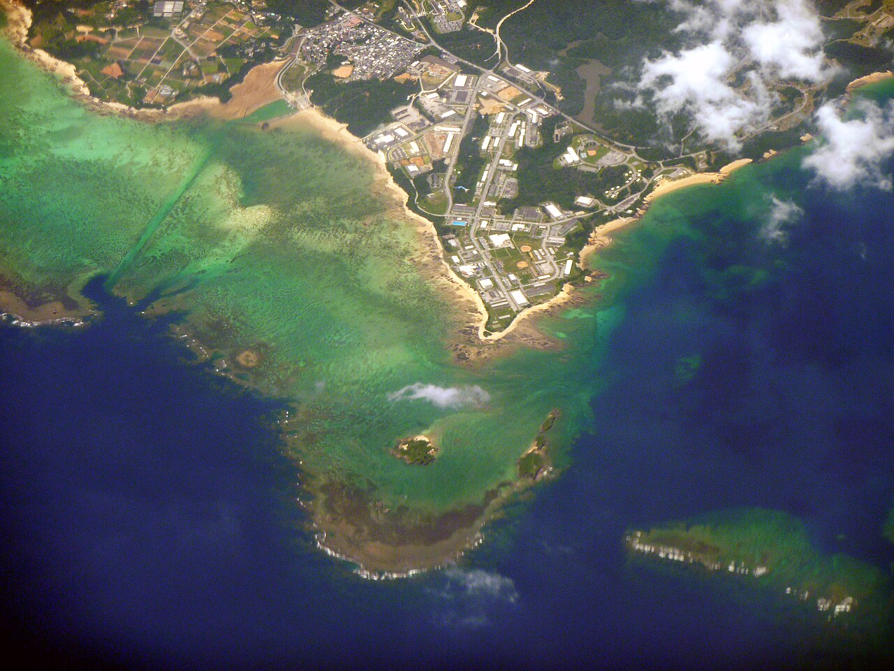
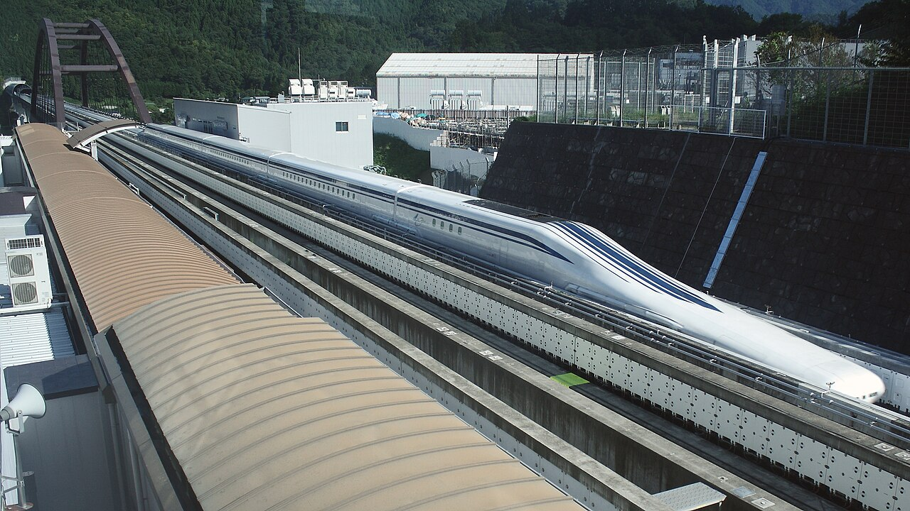

未完の大事業
日本のサグラダ
ファミリア三選！
世界一有名な未完成建築
サグラダ・ファミリア
場所・どんな施設？
スペイン・バルセロナ／ガウディ設計の大聖堂
着工
1882年
完成まで
144年。2026年に主要な塔が完成
時間がかかっている理由
内戦で設計図を焼失／ガウディの死で後継者不在に／寄付と入場料だけが頼り

3
位
辺野古新基地
普天間飛行場代替施設
場所・どんな施設？
沖縄県名護市辺野古／海を埋め立てる新基地建設
着工
2018年(埋立開始)
完成まで
8年経って進捗わずか17%。完成時期は未定
時間がかかっている理由
大浦湾側で軟弱地盤が発覚／設計変更と反対運動が続く

2
位
リニア中央新幹線
東京－名古屋－大阪
場所・どんな施設？
品川－名古屋－大阪／JR東海の超電導リニア
着工
2014年
完成まで
12年経って、2027年開業予定は無期限延期
時間がかかっている理由
静岡県内の水資源・環境問題で一部区間が着工できない
1
位
福島第一原発廃炉
2011年事故後の廃炉作業
場所・どんな施設？
福島県／事故を起こした原発の後始末
着手
2011年
完了まで
15年経っても、目標は「事故から30～40年後」のまま
時間がかかっている理由
燃料デブリの正体が未解明／取り出し技術も未確立／高線量で人が近づけない
3つの共通点
終了時期を示しておきながら、
現実的でなくなっても
新しい時期は示さない。
そして、金額だけが膨らみ続ける。
過去の日本に、
こんな事例があっただろうか。
サグラダ・ファミリアと違い、
"終わり"が見えない。
日本の停滞・衰退を、
象徴しているのではないか。
どう思う？コメントで教えて。